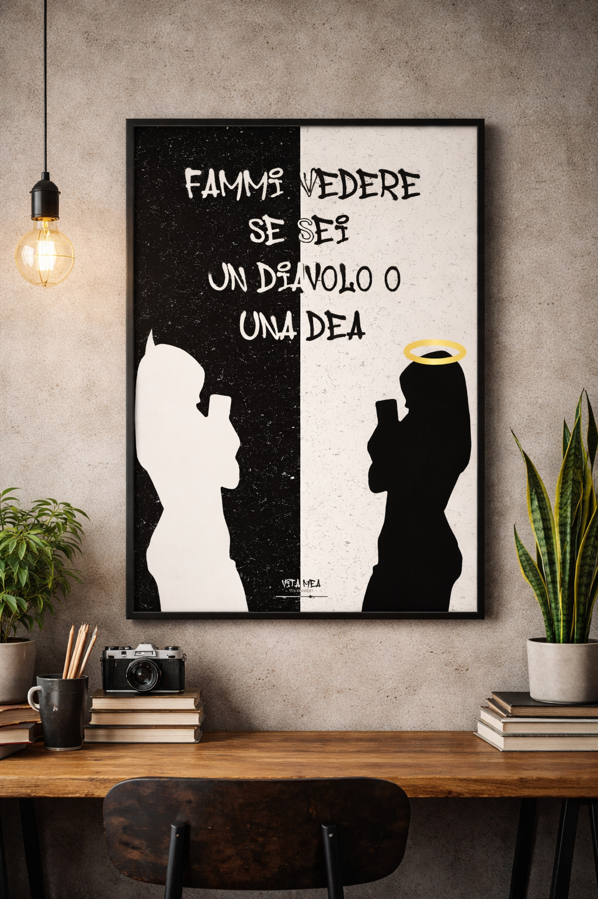

Vita mea
Poster
 Vita mea.png)
Descrizione breve
Questa grafica è ispirata alla canzone "Vita mea" di icy subzero
e nasce come rappresentazione visiva della dualità emotiva e morale descritta nel brano.
L'opera raffigura la stessa donna vista attraverso due interpretazioni opposte:
- a sinistra come un diavolo
- a destra come un angelo
Non si tratta di due soggetti diversi, ma di due prospettive della stessa figura a sottolineare l'amiguita dei sentimenti e delle relazioni raccontate nel brano: attrazione e conflitto, bene e male, amore e dolore.
Il gioco di colori
La scelta cromatica è volutamente invertita rispetto al significato tradizionale dei simoboli:
- il diavolo è rappresentato in bianco su sfondo nero
- l'angelo è rappresentato in nero su sfondo bianco
Il contrasto netto tra bianco e nero enfatizza la dicotomia, ma allo stesso tempo suggerisce che nessuna delle due parti è assoluta. La linea di separazione centrale diventa quindi una metafora del confine sottile tra ciò che sembra giusto e ciò che lo è davvero.
Stile e atmosfera
Lo stile minimalista, le silhouette e la texture sporca e granulosa contribuiscono a creare un’estetica cruda e introspettiva, coerente con il tono emotivo del brano. L’assenza di dettagli superflui concentra l’attenzione sul messaggio concettuale piuttosto che sull’ornamento.
